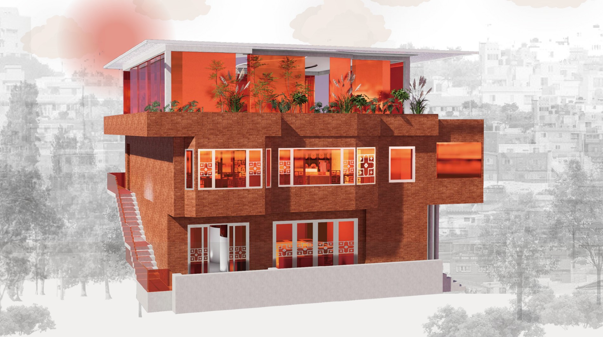

← All projects
Adaptive Reuse · Smart Space
遮解; 차해
환경 반응형 파사드와 감각 중심의 전통문화 체험 공간
Design proposal · 개인 기여 범위는 추후 기재

Background & Concept
기존 구옥을 재사용하고 주거지역의 소음과 빛공해를 설계 조건으로 설정했다. 노을을 모티브로 감각의 제한과 확장을 통해 취향을 발견하는 경험을 제안한다.
Intelligent Facade
Tomorrow.io 날씨 데이터, 엣지 서버, KNX 통신을 연결하는 제어 시나리오를 제안한다. PDLC 스마트 글라스와 개폐형 천장, 전통 창호 기반 조리개 창을 적용한 설계이다.
Spatial Experience
1층 풀어짐, 2층 물듦, 3층 머묾으로 이어지는 공간 경험과 전시 이용 여부에 따른 동선 분리를 계획했다.